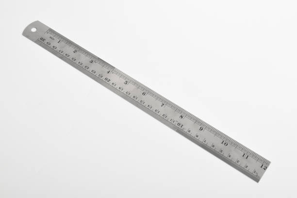
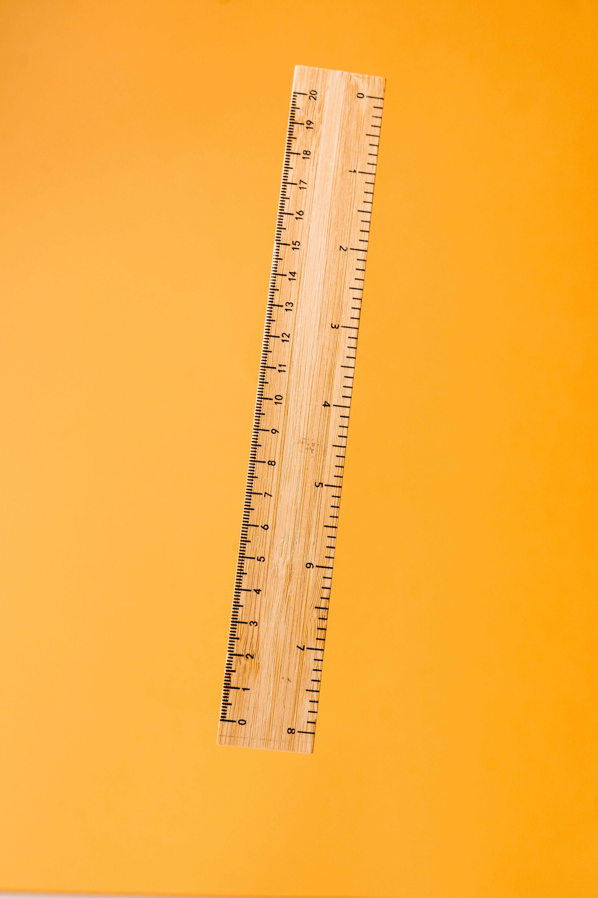

Galeria Temática
Confira abaixo os principais modelos de réguas comercializados no mundo:
 Régua Escolar Acrílica
Régua Escolar Acrílica
 Escalímetro Triangular
Escalímetro Triangular

Régua de Aço Inox
Régua de Madeira FSC